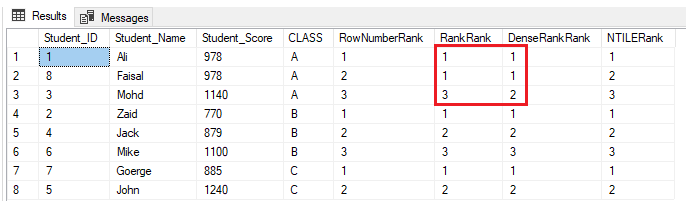

==============================================================================================
CREATE TABLE StudentScore
(
Student_ID INT PRIMARY KEY,
Student_Name NVARCHAR (50),
Student_Score INT,
CLASS Char(1)
)
Go
INSERT INTO StudentScore VALUES (1,'Ali', 978,'A')
INSERT INTO StudentScore VALUES (2,'Zaid', 770,'B')
INSERT INTO StudentScore VALUES (3,'Mohd', 1140,'A')
INSERT INTO StudentScore VALUES (4,'Jack', 879,'B')
INSERT INTO StudentScore VALUES (5,'John', 1240,'C')
INSERT INTO StudentScore VALUES (6,'Mike', 1100,'B')
INSERT INTO StudentScore VALUES (7,'Goerge', 885,'C')
INSERT INTO StudentScore VALUES (8,'Faisal', 978,'A')
SELECT *, ROW_NUMBER() OVER(PARTITION BY CLASS ORDER BY Student_Score) AS RowNumberRank,
RANK () OVER(PARTITION BY CLASS ORDER BY Student_Score) AS RankRank,
DENSE_RANK () OVER(PARTITION BY CLASS ORDER BY Student_Score) AS DenseRankRank,
NTILE(7) OVER(PARTITION BY CLASS ORDER BY Student_Score) AS NTILERank
FROM StudentScore
GO

Use DenseRank and here we partition data by Class and ranking is done with in the same class
https://codingsight.com/methods-to-rank-rows-in-sql-server-rownumber-rank-denserank-and-ntile/
==============================================================================